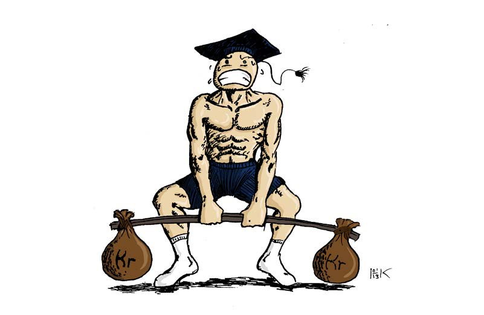

Trondheimsstudentene har i flere år nytt godt av landets billigste treningstilbud. Nå står pusterommet i studentbudsjettet i fare.
TEKST: Fredrik schjefstad
Journalist

Mange ivrige studenter gledet seg over Studentskipnaden i Trondheims (SiT) midertidige svar på stappfulle treningsentre på campus. I 2011 ble Portalen ved Solsiden den etterlengtede redningen med nytt utstyr og sentral plassering. Velferdsdirektør Anders Stenvig i SiT lovte da at selv om Portalen ble en dyr, leiebasert kriseløsning ville ikke treningsavgiften overskride 1200 kroner i året. Dette virket for godt til å være sant, og når noe gjør det, er det som regel det.
SiT Idrett satset på at flere studenter skulle melde seg på det utvidede tilbudet. Drøye 12 000 av 31 000 trondheimsstudenter viste seg å være medlemstaket SiT Idrett måtte forholde seg til. Selv om tilbudet ble noe utvidet med Portalen, var trykket såppas stort hos Dragvoll og Gløshaugen at en medlemsøkning bare ville ført til tre stappfulle treningssentre, framfor to. Behovet for et nytt og permanent anlegg ville da blusset opp igjen i en av landets tregeste kommuner. Medlemstallet økte ikke. Feilberegningen førte til millionunderskudd og brutte lovnader om pristak.
Trondheimsstudentene har i en årrekke kunnet benytte seg av et treningstilbud med slak prisøkning, men nå er de ofre for et drastisk prishopp fra 550 til 830-900 kroner per semester. Slik regner SiT Idrett med at underskuddet er dekket i løpet av 2014. NTNUI ønsket en begrenset økning over lengre tid, men
appellen ble ikke hørt. Å tro at treningskontigenten
på et senere tidspunkt vil nedjusteres på noe vis, er
urealistisk. Trenden er at flere ønsker gruppetimer,
noe som gir ytterligere lønnsutgifter for SiT Idrett.
Allerede trimmer 20 prosent av studentene ved private treningsentre som har god plass og profesjonell oppfølging. Om SiTs treningstilbud må konkurrere i kvalitet, vil de tape stort. For selv om disse alternativene koster mer, er kvaliteten også deretter. Med den drastiske økningen av treningsavgiften vil det være flere som spør seg om tilbudet svarer til prisen. De mest ivrige studentene vil sannsynligvis prioritere trening i sitt budsjett, men «støttemedlemmer » og de som liker å benytte seg av et lavterskeltilbud av og til vil kanskje revurdere sitt medlemskap. Da det allerede er en høy pris på dagsbillett på 70 kroner, har det å kjøpe et treningskort til 550 kroner, som man bruker i rykk og napp for å holde seg i bevegelse, ikke vært det store tiltaket. Om færre trener, er det allmennheten og SiT Idrett som taper i det lange løp.
21 200 232Trondheim kan fremdeles smykke seg med et av landets billigste treningstilbud. På grunn av de geologiske utfordringene med kvikkleire i Dødens dal er planene om et nytt storanlegg utsatt. Om det kommer på plass før leieavtalen med Portalen går ut i 2016, er vanskelig å si. Samme hva utfallet blir, tyder det meste på at treningsavgiften er i ferd med å nærme seg prisnivået til private aktører.
Konsekvensen er umiddelbart en markant prisøkning i det ene pusterommet i et ellers bunnskrapt studentbudsjett. Og da er vi tilbake til den gamle kampsaken om det stagnerte studiestipendet i et samfunn der alt blir dyrere.